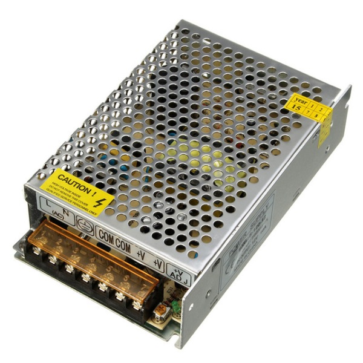
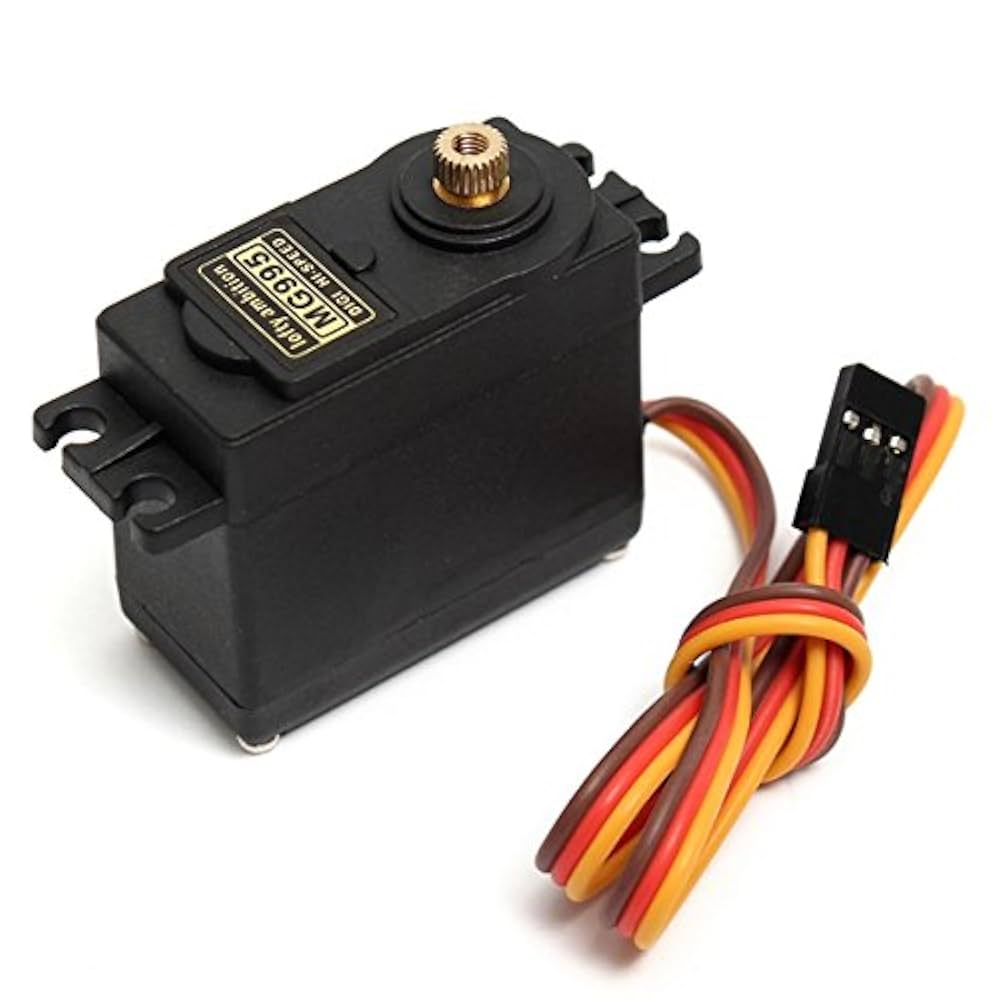
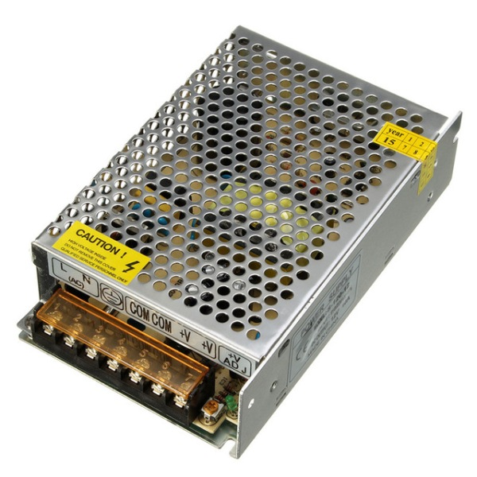
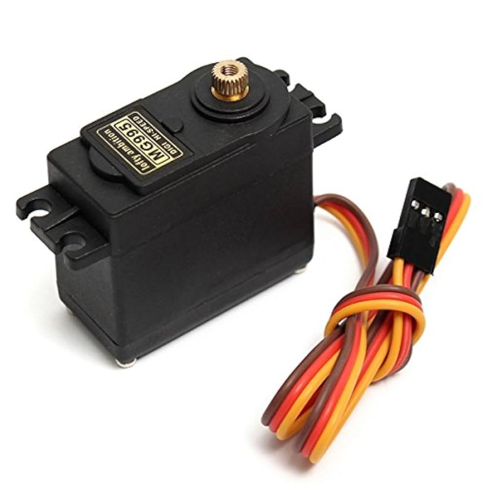

#include <ESP8266WiFi.h>
#include <ESP8266WebServer.h>
const char* ssid = "subuz_";
const char* password = "SMwifi@24";
ESP8266WebServer server(80);
bool fanState = false;
int fanSpeed = 0;
bool servoState = false;
const int fanPin = D1;
const int servoPin = D2;
String buildHTML() // Web page code goes here
void setup() {
Serial.begin(115200);
pinMode(fanPin, OUTPUT);
analogWriteRange(1023);
analogWriteFreq(5000);
pinMode(servoPin, OUTPUT);
digitalWrite(servoPin, LOW);
WiFi.begin(ssid, password);
Serial.print("Connecting to Wi-Fi");
while (WiFi.status() != WL_CONNECTED) { delay(500); Serial.print("."); }
Serial.println("\n✅ Connected!");
Serial.print("IP Address: "); Serial.println(WiFi.localIP());
server.on("/", []() { server.send(200, "text/html", buildHTML()); });
server.on("/fan/on", []() {
fanState = true;
int pwmVal = map(fanSpeed, 0, 100, 0, 1023);
analogWrite(fanPin, pwmVal);
Serial.println("FAN:ON");
server.send(200, "text/plain", "OK");
});
server.on("/fan/off", []() {
fanState = false;
analogWrite(fanPin, 0);
servoState = false;
digitalWrite(servoPin, LOW);
Serial.println("FAN:OFF + SERVO LOCK AT 90");
server.send(200, "text/plain", "OK");
});
server.on("/speed", []() {
fanSpeed = server.arg("val").toInt();
fanSpeed = constrain(fanSpeed, 0, 100);
if (fanState) {
int pwmVal = map(fanSpeed, 0, 100, 0, 1023);
analogWrite(fanPin, pwmVal);
}
Serial.print("SPD:"); Serial.println(fanSpeed);
server.send(200, "text/plain", "OK");
});
server.on("/servo", []() {
servoState = (server.arg("state") == "on");
digitalWrite(servoPin, servoState ? HIGH : LOW);
Serial.print("SERVO:"); Serial.println(servoState ? "ON" : "OFF");
server.send(200, "text/plain", "OK");
});
server.begin();
Serial.println("HTTP server started");
}
void loop() {
server.handleClient();
}
#include <Servo.h>
const int fanPWMInput = A0;
const int fanPWMOut = 5;
const int motorL = 6;
const int motorR = 7;
const int servoControlPin = 2;
const int servoPin = 9;
Servo tiltServo;
int servoAngle = 90;
bool servoDirection = false;
unsigned long lastServoTime = 0;
const int servoSpeedDelay = 20;
void setup() {
Serial.begin(9600);
pinMode(fanPWMOut, OUTPUT);
pinMode(motorL, OUTPUT);
pinMode(motorR, OUTPUT);
pinMode(servoControlPin, INPUT);
tiltServo.attach(servoPin);
tiltServo.write(servoAngle);
}
void loop() {
int pwmVal = analogRead(fanPWMInput);
int pwmOut = map(pwmVal, 0, 682, 0, 255);
pwmOut = constrain(pwmOut, 0, 255);
analogWrite(fanPWMOut, pwmOut);
digitalWrite(motorL, HIGH);
digitalWrite(motorR, HIGH);
bool servoActive = digitalRead(servoControlPin);
if (servoActive) {
unsigned long now = millis();
if (now - lastServoTime >= servoSpeedDelay) {
lastServoTime = now;
if (!servoDirection) {
servoAngle++;
if (servoAngle >= 120) servoDirection = true;
} else {
servoAngle--;
if (servoAngle <= 60) servoDirection = false;
}
tiltServo.write(servoAngle);
}
} else {
if (servoAngle < 90) servoAngle++;
else if (servoAngle > 90) servoAngle--;
tiltServo.write(servoAngle);
}
}
 


